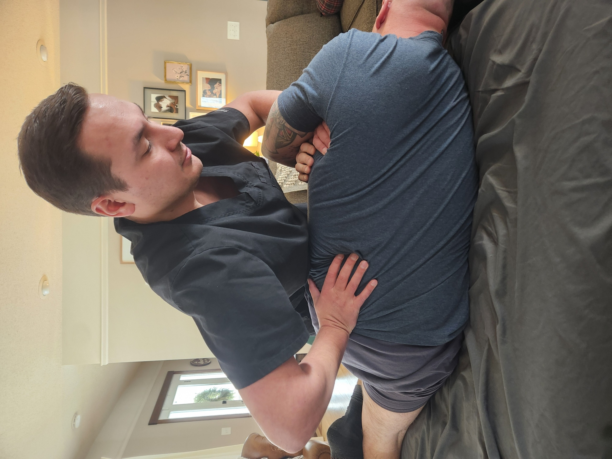

"I came in with constant low back pain that kept me from golfing. Within a few weeks of working with Mitch on dry needling and targeted exercises, I was back on the course and moving without fear."
— J.B.
Evidence-based care—delivered where you need it.
First time visiting? Use "Register" • Already a patient? Use "Book Appointment"
Mitch Bridgeford is a dedicated physical therapist committed to helping patients recover, move better, and live pain-free. With years of clinical experience and a results-driven, patient-first philosophy, Mitch designs customized treatment plans tailored to each individual’s unique needs and goals.
His approach combines advanced manual therapy, evidence-based techniques, and personalized movement programs to restore function and enhance overall performance—now offered through a flexible mobile care model.
Trusted by athletes, active adults, and growing families seeking confident movement and lasting relief—Mitch helps you return stronger, healthier, and more resilient.
Targeted recovery programs for athletes and active individuals.
Pelvic health support for expecting and new mothers.
Evidence-based treatment for acute and chronic pain.
Restore range of motion and build functional strength.
Personalized programming aligned to your goals and lifestyle.
Long-term strategies to reduce pain and improve function.
Real stories from patients who trusted Bridgeford Physical Therapy with their recovery.
"I came in with constant low back pain that kept me from golfing. Within a few weeks of working with Mitch on dry needling and targeted exercises, I was back on the course and moving without fear."
— J.B.
"Mitch doesn't rush you. He listened, explained what was going on with my shoulder, and used spinal manipulation and cupping to get my range of motion back. I finally feel like myself again."
— K.S.
"After knee surgery I was nervous about walking without pain. Mitch built a step-by-step rehab plan and combined manual therapy with exercise prescription. I'm walking confidently and even hiking again."
— L.M.
"I had chronic neck tension from desk work for years. The mix of deep tissue work, cupping, and posture exercises that Mitch gave me has completely changed how I feel at the end of the day."
— A.R.
"As a recreational runner, I was frustrated by recurring hip pain. Mitch found the root cause, not just the symptoms, and gave me a plan that kept me training without flare-ups."
— D.T.
"The one-on-one attention at Bridgeford Physical Therapy is unmatched. Dry needling plus strengthening made a huge difference in my shoulder stability after years of weakness."
— C.P.
"Mitch helped me with long-standing sciatic pain. The combination of spinal manipulation, mobility work, and home exercises finally gave me real relief."
— N.H.
"I appreciated how clearly Mitch explained every treatment, from cupping to joint mobilization. I always knew why we were doing something and how it fit into my recovery."
— S.E.
"My chronic shoulder pain from years of manual labor is finally manageable. The deep tissue techniques and strengthening plan Mitch created were exactly what I needed."
— R.W.
"From the first visit, I felt heard and supported. The personalized exercise prescription and hands-on therapy got me back to playing with my kids without worrying about pain."
— M.G.

Mobile Physical Therapist.
We come to you anywhere in the greater Minneapolis area (home, office, gym).
Serving Minneapolis, St. Paul, and surrounding metro communities.
Flexible scheduling by appointment. Request a time that works for you.
Ready to start your recovery? We're here to help.